Nice Work
- Blocs Apps has a pretty nice site, and I particularly like their dark jungle green background color
- Tommaso Zennaro has a great personal portfolio site, though it's pretty plain and could use some sprucing up and debugging on the smallest screen sizes
- Squadfree an overdone agency website with some cool features that I could barrow and tone down
- This young designer's portfolio has a wonderfully minimal look on mobile, but it loses the awesome side-scrolling navigation and content it has on desktop.
- Really awesome design agency single-page website featuring a full-page hero carousel and hover animations.
- Nice and Serious - love the page-down animation.
- The Touch Agency
- Werkstatt
- Hi Res
- Rally Interactive
- Bonhomme
- Joris Works
- Manual Creative
The main thing you see is an auto-rotating slideshow, with both images and text.
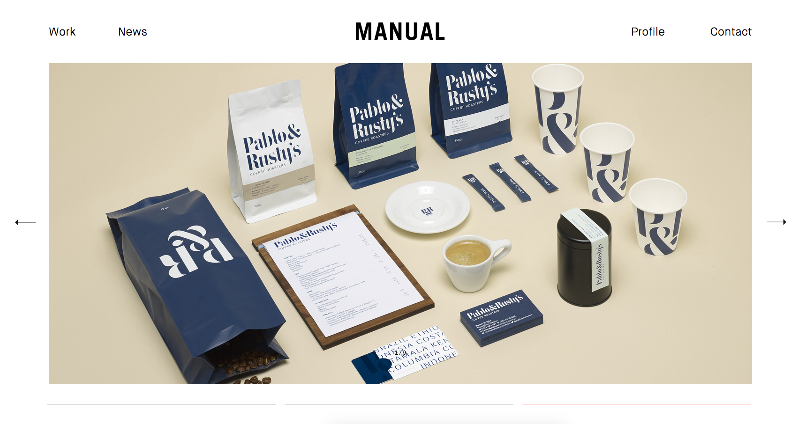
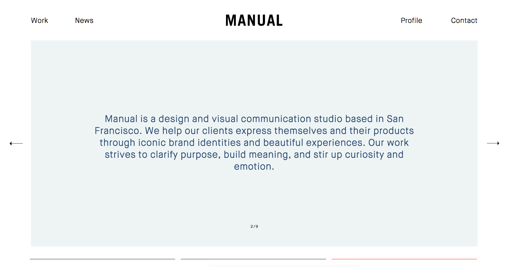
Interesting link rollover indication - a dot appears beneath the link
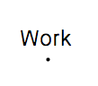
- Kyle Thacker- Breathtakingly simple homepage, with buttons for projects.
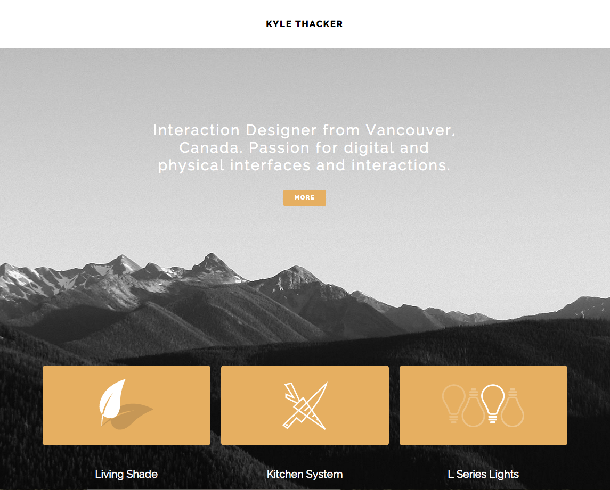
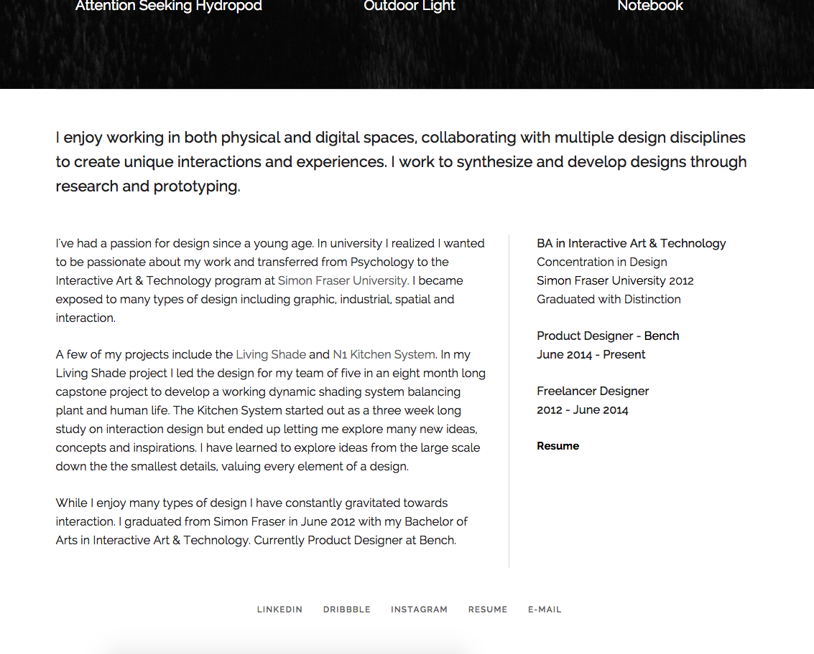
He uses slideshow-style navigation to move between projects (once you're on a project page).
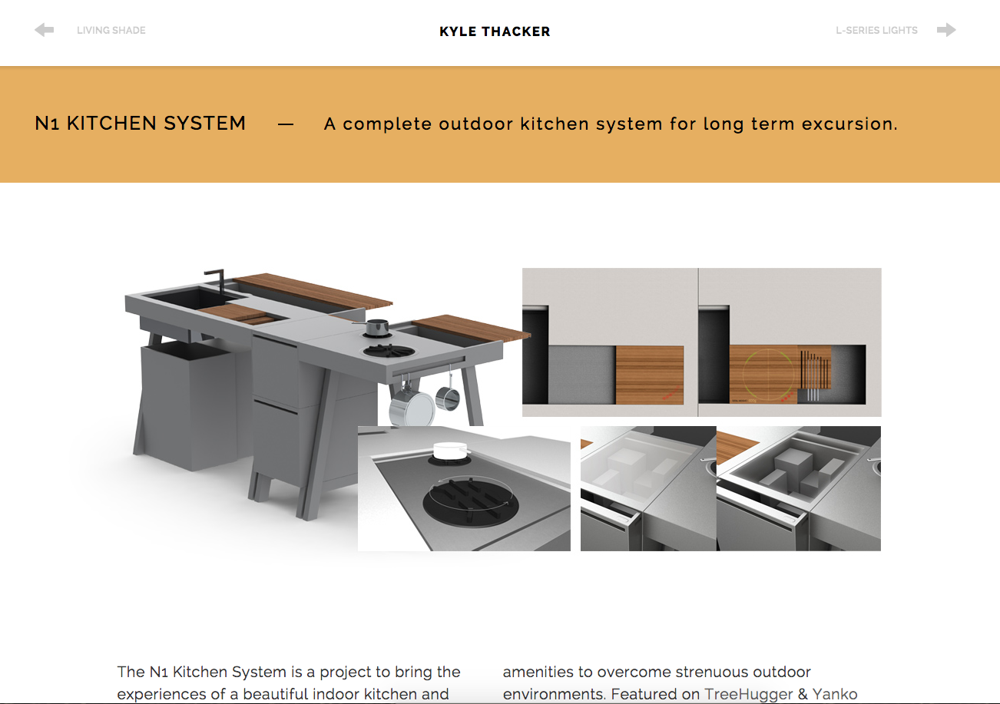
- Alexander Munk- not a responsive site or a single-page design, but I still like the simplicity of this.
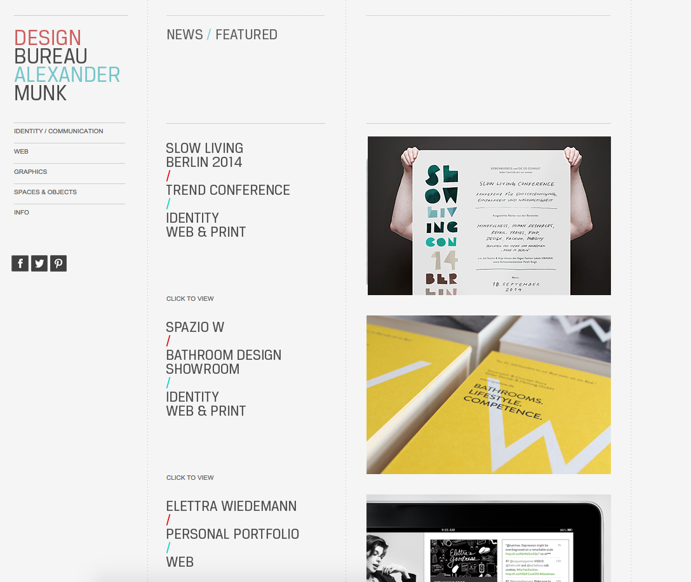
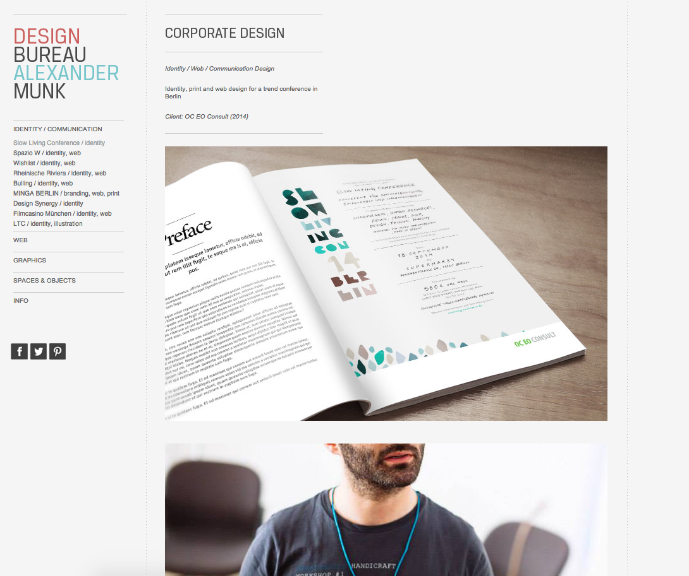
- Aleks Faure- TOTALLY minimal, not info, but nice contact page.
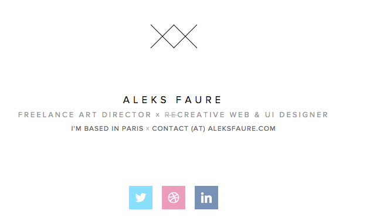
- Mimi Lai- She used a theme but it turned out pretty good - especially these portfolio rollovers!
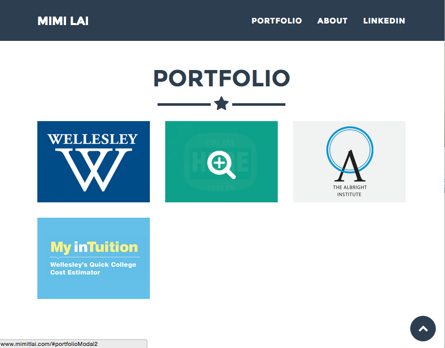
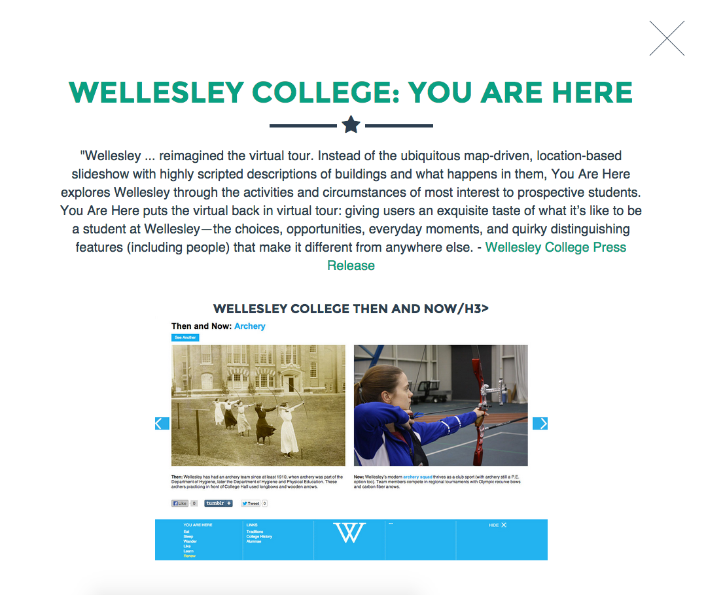
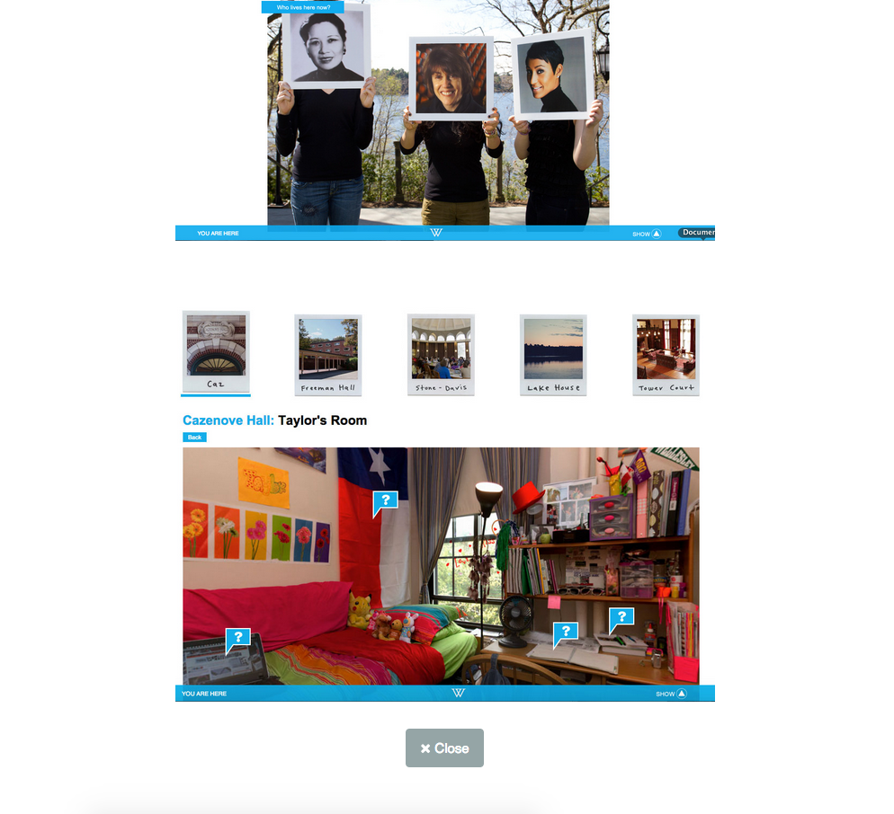